SAGRADO CORAZÓN DE LA MOLINA BUSINESS & INNOVATION FAIR
Plataforma educativa interactiva para Secundaria enfocada en innovación, emprendimiento, validación y presentación de proyectos.
🚀 Innovación💡 Emprendimiento🎤 Pitch
¡Tu idea puede convertirse en una solución con impacto!Completa tu ficha de estudiante para personalizar la experiencia, guardar tu avance y generar tu diploma final.
SCM BUSINESS & INNOVATION FAIRImagina · Crea · Produce · Distribuye
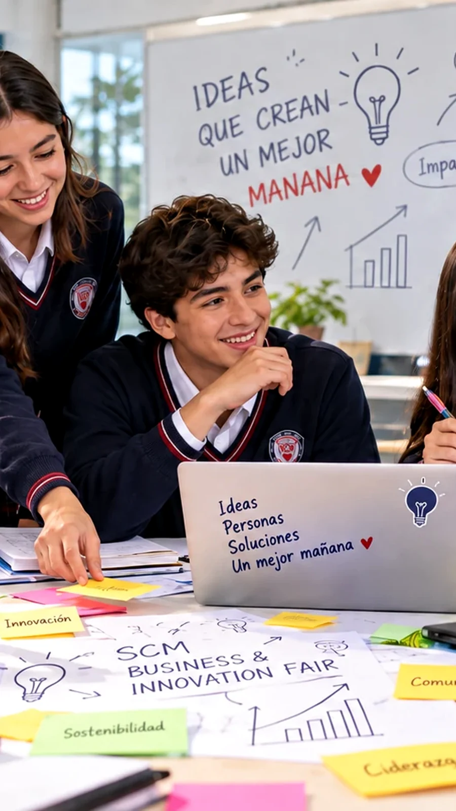
💡 IMAGINATransforma una necesidad en una oportunidad.
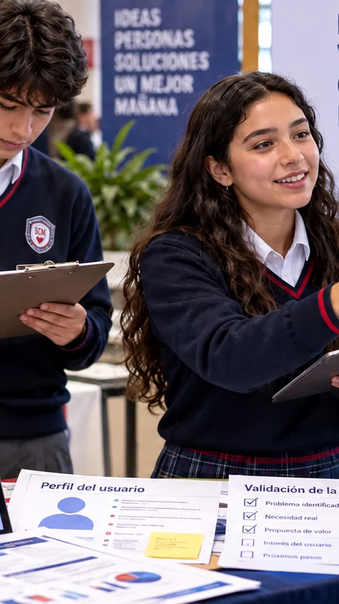
🔎 INVESTIGAEscucha a tus usuarios y valida con evidencia.
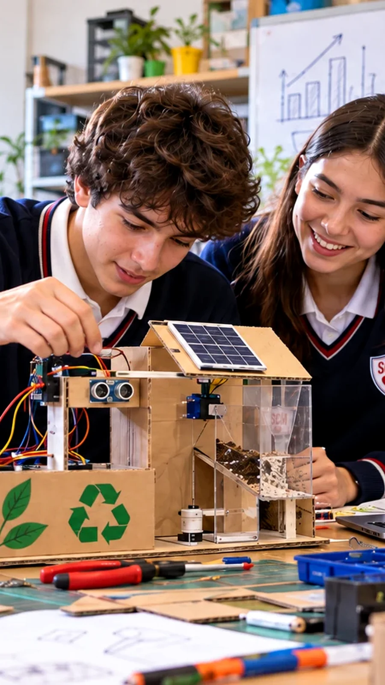
🧪 PRODUCEConstruye, prueba y mejora tu prototipo.
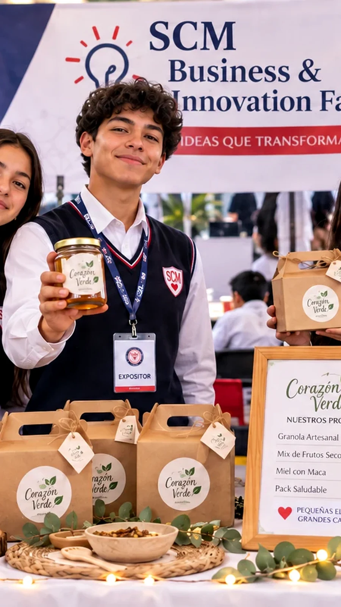
🎨 CREAComunica tu propuesta con una identidad clara.🎤 SUSTENTADefiende tu idea con claridad y evidencia.
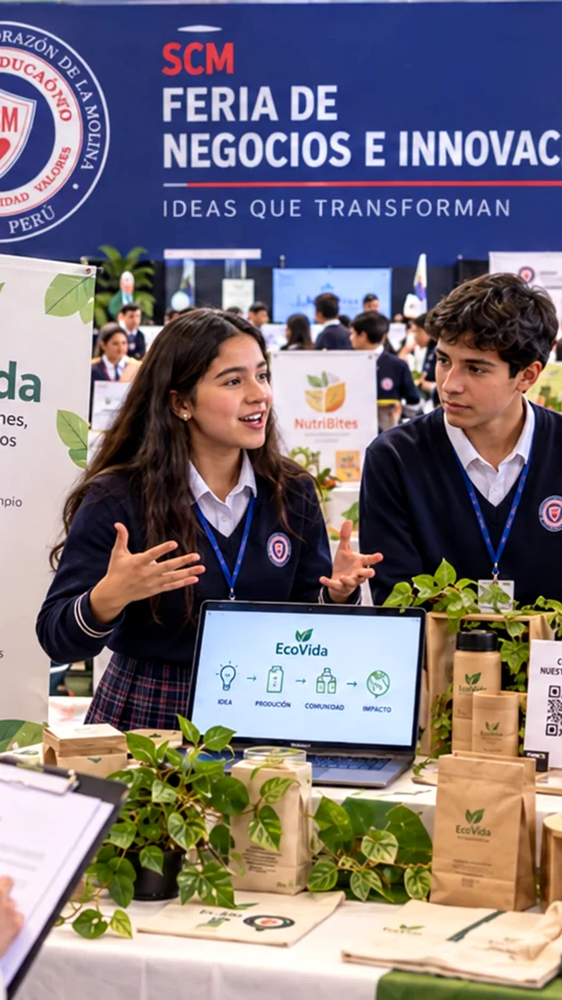
🚀 DISTRIBUYEComparte tu solución y genera impacto.
⏱Cambio automáticocada 5 segundos
Sagrado Corazón de La MolinaBusiness & Innovation Fair
0%
Progreso0 de 11
ES
EstudianteGrado · Sección
Guía interactiva · Secundaria
Ideas que inspiran, soluciones que transforman.
Aprenderás a detectar una oportunidad, validarla con evidencia, desarrollar un MVP, construir una propuesta de valor, modelar el negocio y defender tu proyecto con un pitch breve.
9etapas
2 minpitch
20puntos máx.
💡
Reto de hoy: no empieces por el producto. Empieza por comprender una necesidad real y demostrarla con evidencia.
🔎Detectauna oportunidad real
🧭Investigacon evidencia
🧪Prototipay prueba con usuarios
💎Crea valorpara tu cliente
🎤Sustentacon seguridad
Pregunta central
¿Qué oportunidad identificamos, qué evidencia demuestra que existe y por qué nuestra solución genera valor para un cliente objetivo?
Tu ruta de aprendizaje
Cómo se desbloquea el diploma
Completa las 7 secciones de teoría, supera los 3 juegos y aprueba el cuestionario con al menos 8/10.
Fundamento
Del problema a una propuesta sustentada
El proyecto parte de una necesidad, problema u oportunidad relevante; luego se investiga, valida, diseña y prueba una solución hasta convertirla en una propuesta empresarial sustentada con evidencia.
01
🔎
Investigar y validarEntrevistas, encuestas, observación y pruebas convierten una percepción en evidencia útil.
¿Qué se espera del equipo?
Identificar y analizar una oportunidad con potencial de emprendimiento.
Investigar al cliente mediante entrevistas, encuestas, observación, datos o pruebas.
Desarrollar un prototipo funcional o MVP y probarlo con usuarios.
Definir propuesta de valor, marca, marketing y comunicación.
Analizar cliente, costos, precio, canales, comercialización, viabilidad y crecimiento.
Preparar stand y pitch; defender decisiones ante público y jurado.
Autonomía y apoyo familiar
El estudiante lidera la investigación, toma de decisiones, distribución de responsabilidades y sustentación. La familia puede apoyar con logística, materiales, contactos, supervisión o escucha de ensayos, pero no sustituye el trabajo intelectual ni creativo.
Regla de oro: orientar sin resolver. Las decisiones y argumentos finales deben pertenecer al equipo.
1NecesidadDetectar algo que vale la pena resolver.
→
2EvidenciaValidar que el problema y el cliente existen.
→
3ValorDemostrar por qué la solución importa.
Mapa de trabajo
Ruta del emprendimiento
La guía propone nueve pasos conectados. Cada etapa produce evidencia o decisiones que alimentan la siguiente.
02
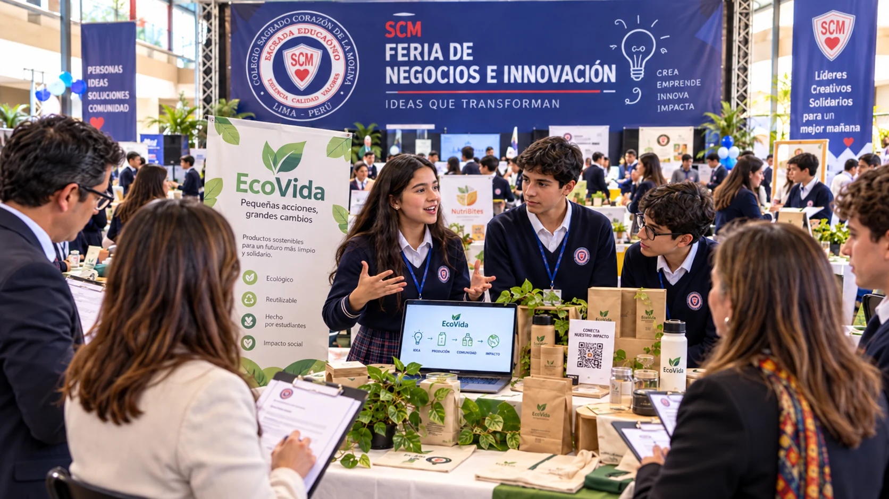
🚀
De la idea a la feriaLa ruta conecta oportunidad, cliente, solución, MVP, valor, marca, modelo de negocio y sustentación.
🚀
No busques hacerlo perfecto a la primera. La mejora aparece cuando pruebas, escuchas y documentas los cambios.
Experimentación
MVP, pruebas y mejora
El MVP o prototipo funcional permite probar la solución con usuarios reales, recoger retroalimentación y documentar cambios fundamentados.
03
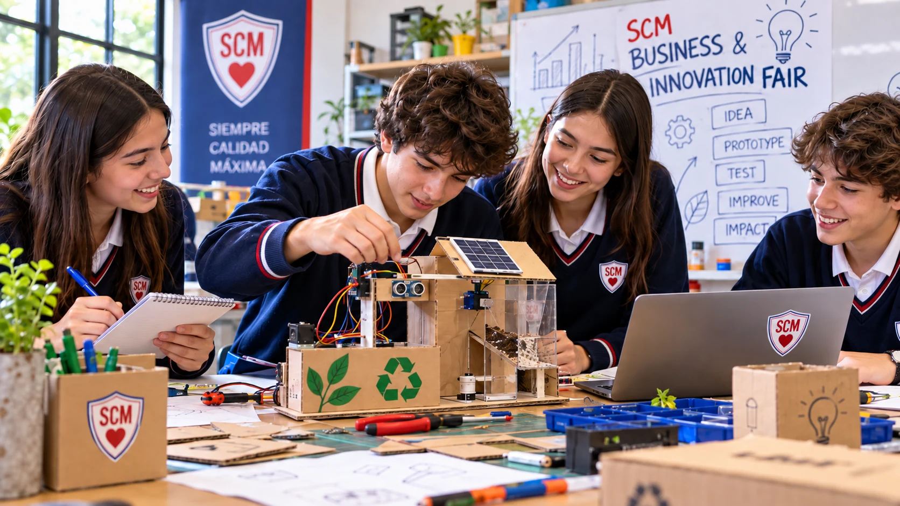
🧪
Construir para aprenderUn prototipo funcional permite probar, recoger retroalimentación y justificar mejoras.
Ciclo de validación
Construyeversión funcional
→
Pruebacon usuarios
→
Aprendeanaliza feedback
→
Mejoradocumenta cambios
La guía evalúa no solo el prototipo final, sino también las pruebas y mejoras realizadas.
Pregunta útil: ¿qué aprendimos del usuario que cambió nuestra solución?
Video complementario
¿Qué es un Producto Mínimo Viable?
Recurso externo para reforzar el concepto de MVP y validación.
Estrategia
Propuesta de valor y modelo de negocio
Una propuesta sólida define para quién es, qué resuelve y por qué es diferente; además conecta cliente, costos, precio, canales, comercialización y posibilidades de crecimiento.
04
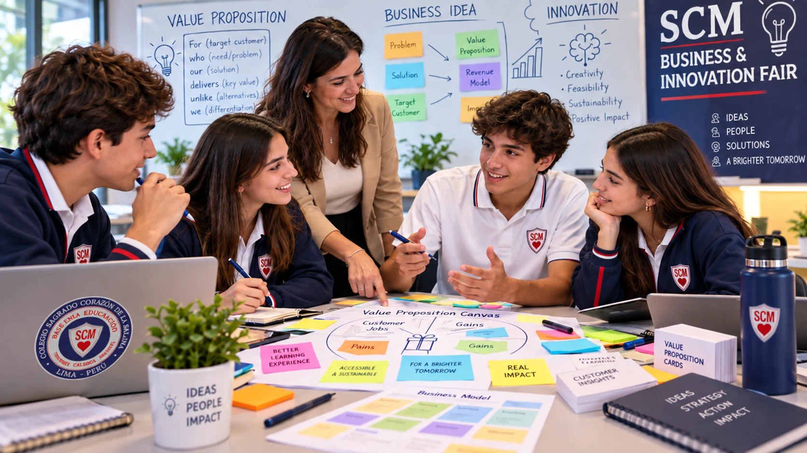
💎Propuesta de valor
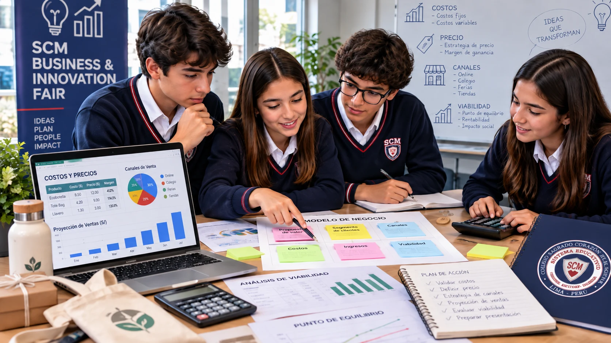
📊Modelo de negocio y viabilidad
👤
Cliente
¿Para quién creamos valor y cómo sabemos que es el público correcto?
🎯
Problema
¿Qué necesidad u oportunidad está sustentada con evidencia?
💎
Valor
¿Qué beneficio genera la solución y qué la hace diferente?
💰
Viabilidad
¿Cómo se relacionan costos, precio, canales y estrategia comercial?
Video complementario
Propuesta de valor
Video complementario
Business Model Canvas
Experiencia de feria
Stand, identidad y comunicación
El stand debe permitir comprender el problema, la solución, el proceso, el valor y la lógica comercial del proyecto, no solo mostrar un producto bonito.
05
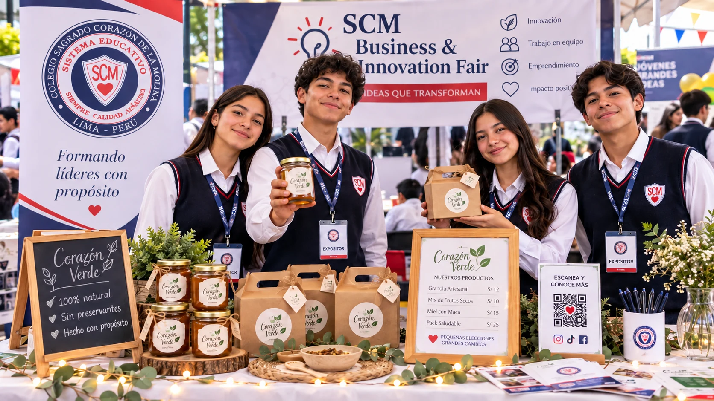
🏪Stand que comunica valor
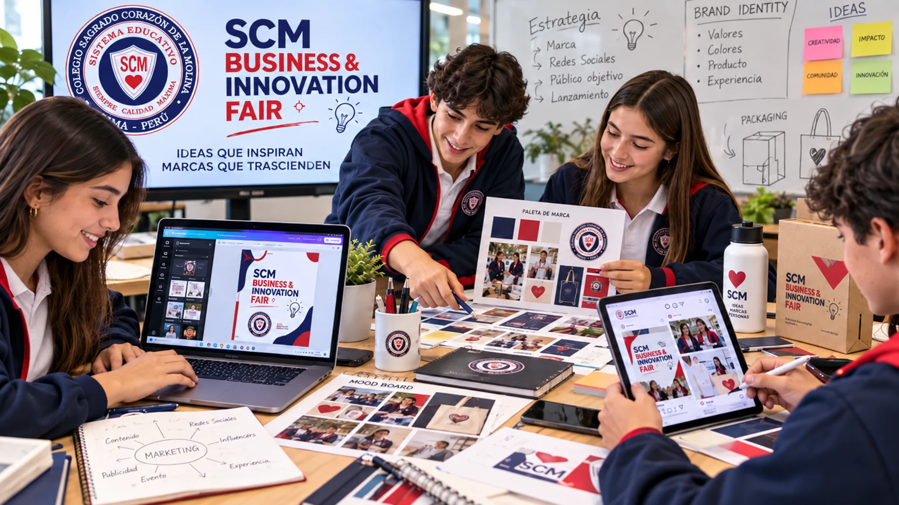
🎨Marca y comunicación
TU MARCA Propuesta de valor
Problema → Evidencia → Solución
MVP
QR
Precio
Requisitos del stand
Problema u oportunidad validada con evidencia.
Cliente objetivo claramente definido.
Propuesta de valor y elemento diferenciador.
Producto, servicio, prototipo funcional o MVP.
Identidad y posicionamiento de marca.
Precio, estructura básica de costos y comercialización.
Evidencia de investigación, pruebas y mejoras.
Estrategia básica de marketing y comunicación.
Recursos de apoyo, como códigos QR.
Presentación breve para explicar y defender la propuesta.
Todos los integrantes deben conocer el proyecto y justificar las decisiones tomadas: evidencia, cliente, diferenciación, aprendizajes del MVP, cambios, costos, precio, viabilidad, impacto y crecimiento.
06
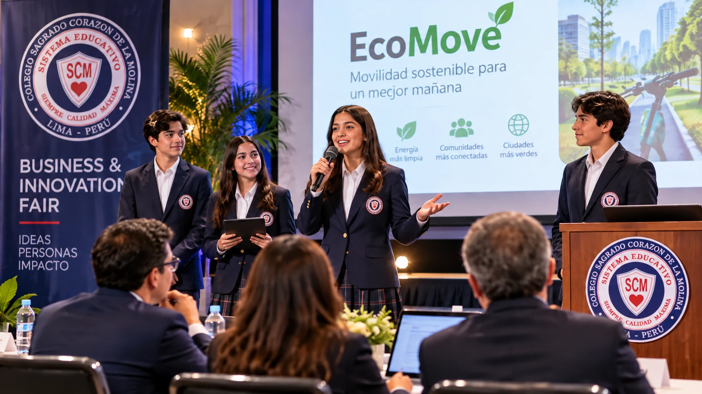
🎤
Defender la propuestaEl pitch reúne evidencia, cliente, solución, aprendizajes, viabilidad e impacto en una explicación breve.
0:00–0:20Problema + evidencia
Explica la oportunidad y demuestra por qué existe.
0:20–0:50Cliente + solución
Define a quién ayudas y qué propones.
0:50–1:20MVP + aprendizaje
Muestra pruebas, feedback y mejoras.
1:20–1:45Valor + negocio
Resume diferenciación, precio, canales y viabilidad.
1:45–2:00Cierre
Impacto, crecimiento y una frase memorable.
Preguntas para ensayar
¿Qué evidencia demuestra que esta oportunidad existe?
¿Quién es el cliente objetivo y cómo lo validaron?
¿Qué hace diferente a su solución?
¿Qué aprendieron al probar el MVP?
¿Qué cambios realizaron y por qué?
¿Cómo definieron costos, precio y estrategia comercial?
¿Por qué consideran viable la propuesta?
¿Qué impacto podría generar y cómo podría crecer?
Video complementario
Elevator pitch: tienes 2 minutos
Planificación
Fechas, evaluación y checklist final
La guía establece fechas de desarrollo, culminación y feria, y una rúbrica de 20 puntos centrada en evidencia, innovación, MVP, viabilidad y sustentación.
07
📅
Prepararse para la feriaPlanifica el desarrollo, la culminación y la presentación final del proyecto.
Cronograma
Desarrollo Investigación, solución, diseño, prototipo y primeras pruebas.
Culminación Mejoras, marca, precio, stand, comunicación y presentación breve.
Feria Presentación, demostración, comercialización y sustentación.
Presentación
1.º, 2.º, 3.º y 4.º Rubens · 3:00 a 6:00 p.m.
4.º Botticelli, 5.º Dalí, 6.º, 5.º y 4.º Schubert - Primaria · 3:00 a 6:00 p.m.
El proyecto se considera evaluación mensual del 4.º bimestre en los cursos indicados por la guía.
4 ptsOportunidad e investigación
Evidencia clara de la necesidad y cliente.
4 ptsInnovación y valor
Solución diferenciada y propuesta sólida.
4 ptsMVP y mejora
Prototipo funcional, pruebas y mejoras.
4 ptsNegocio y viabilidad
Cliente, costos, precio, canales y comercialización.
4 ptsMarca y pitch
Identidad coherente y sustentación convincente.
Checklist final del equipo
Práctica activa
3 retos interactivos
Los juegos utilizan conceptos de la guía Business & Innovation Fair. Se validan en tiempo real y cada reto suma al progreso.
08
🎮
Aprender haciendoLos retos convierten los conceptos centrales de la guía en práctica activa.
Crucigrama del emprendimiento
Completa los términos. Cada letra se valida al escribirla.
0/9 palabras
Ruta mental: ordena el proceso
Toca los pasos en el orden correcto de la ruta de emprendimiento.
Paso 1 de 9
Sopa de letras: 10 palabras clave
Haz clic en la primera y luego en la última letra de una palabra. Puede estar horizontal, vertical o diagonal, en ambos sentidos.
0/10 encontradas
Palabras
Evaluación
Cuestionario de 10 preguntas
Responde todas las preguntas. Recibirás feedback inmediato y necesitas al menos 8/10 para desbloquear el diploma.
09
🧠
Comprueba lo aprendidoResponde las 10 preguntas y revisa el feedback antes de volver a intentarlo.
Meta final
Tu diploma de finalización
Se habilita cuando completas teoría, juegos y cuestionario.
10
🏆
Cierre y reconocimientoCompleta toda la experiencia para habilitar tu diploma de finalización.
Colegio Sagrado Corazón de La Molina
DIPLOMA DE FINALIZACIÓN
Se otorga a
Nombre del estudiante
por completar satisfactoriamente la experiencia educativa
SCM BUSINESS & INNOVATION FAIR · SECUNDARIA
GradoSecciónfecha10/10
SCMFormación e innovación
✓Finalización verificada
🏆
Una propuesta sólida no solo se ve bien: demuestra que existe una oportunidad, que fue validada y que el equipo puede defender por qué genera valor.